Пуэр |
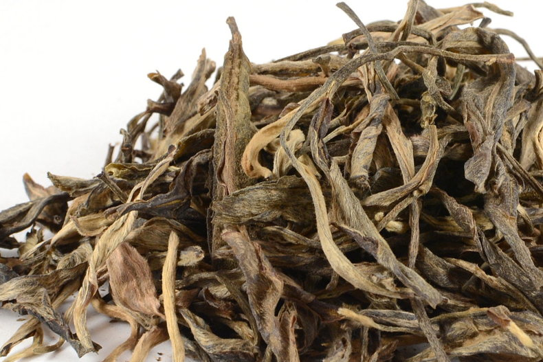 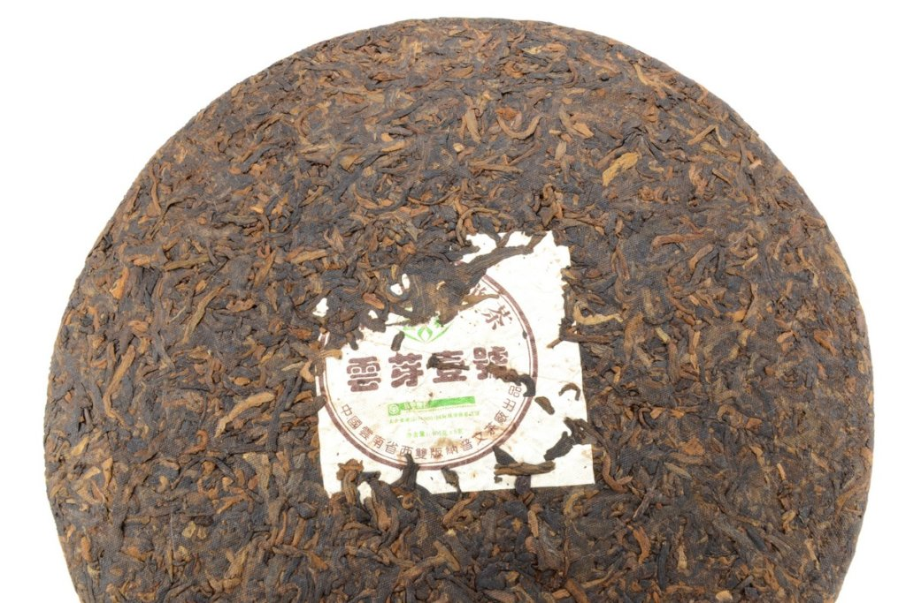 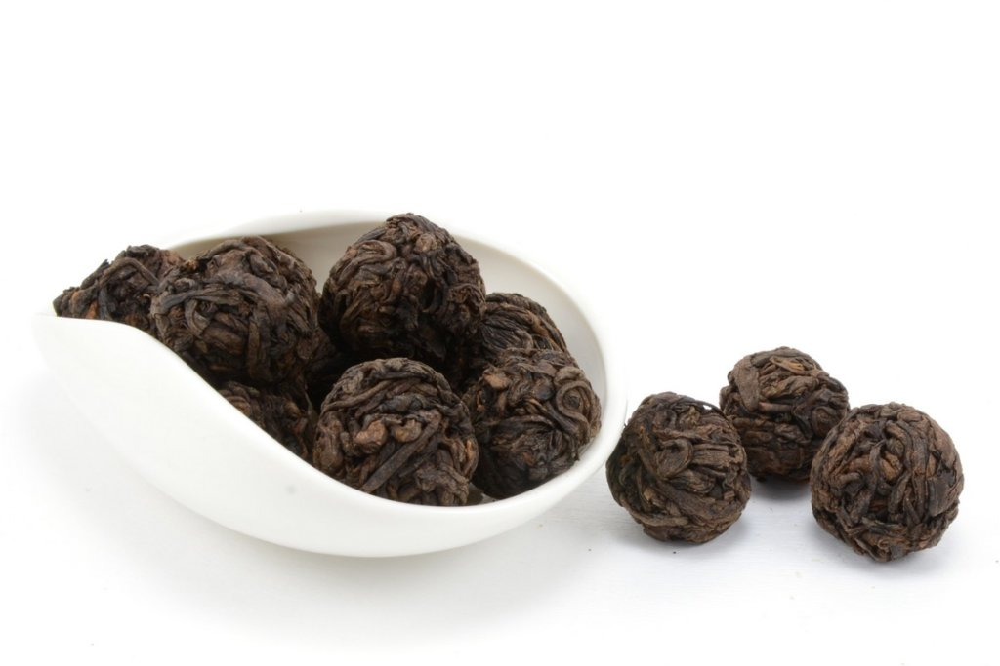 Пуэр – отдельная категория традиционного китайского чая. Можно сказать, что на сегодняшний день это один из самых известных видов из всего многообразия. Не будет ошибочным, если сказать, что это отдельное направление в чайной культуре, имеющее под собой многовековой фундамент, культуру и тонкости. Время и взгляды на чайное ремесло вносили свои коррективы в рецептуру и технологию приготовления чая пуэр. На сегодняшний день существуют два основных вида этого чая. Шэн – «зеленый» («сырой») пуэр, один из самых древних чаев Китая. Его можно назвать природным энергетиком, исходя из воздействия на организм. Это уникальный чай, который невозможно спутать ни с одним чаем. Несмотря на то, что вкус может отличаться от региона к региону, по качеству сырья и т.д., однако в нем есть общий, сухофруктово-компотный тон, прослеживающийся у всех шэнов. Шу – «зрелый» пуэр, самый распространенный в своей категории. Кардинально отличается от своего «старшего» брата, как по цвету, так и по вкусо-ароматическим характеристикам. Отличительной характеристикой этого чая можно назвать землисто-древесную, местами орехово-шоколадную ноту, которая присуща только им. Вопреки расхожему мнению о важности его возраста – это не столь значительный аспект, как в случае с шэнами. Вне зависимости от вида пуэр имеет общую черту воздействия – он приятно тонизирует, собирает ум, приводит мысли в порядок, создавая особую атмосферу уюта, гармонии и тепла. В продаже это чай встречается в различных вариантах – россыпью, а также в прессованной форме. Прессовка может быть различная, но чаще всего можно встретить в виде блина, кирпича, плитки, гриба и чаши. Нельзя сказать, что россыпь определенно лучше или же наоборот. Всё это делается для определенных целей и удобства. Основными и самыми известными фабриками, которые производят пуэр, по праву можно назвать Мэнхай, Сягуань, Мэнку, Ту Линь, Пу Вэнь, Хайвань и др. |
Улун |
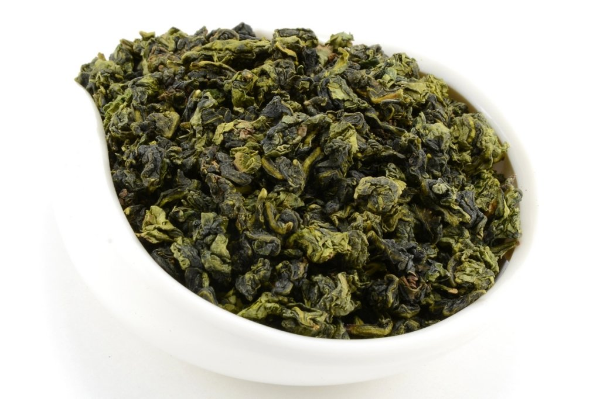 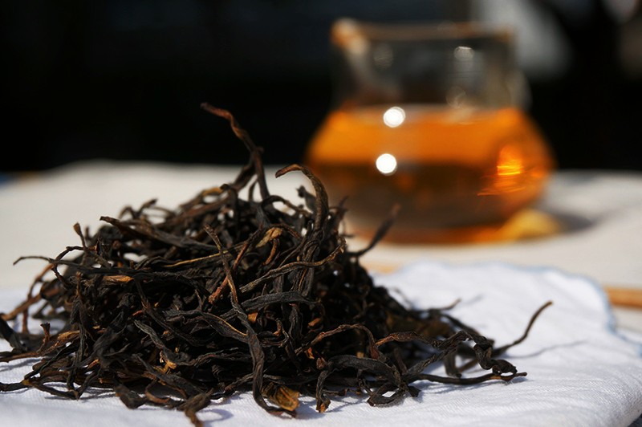 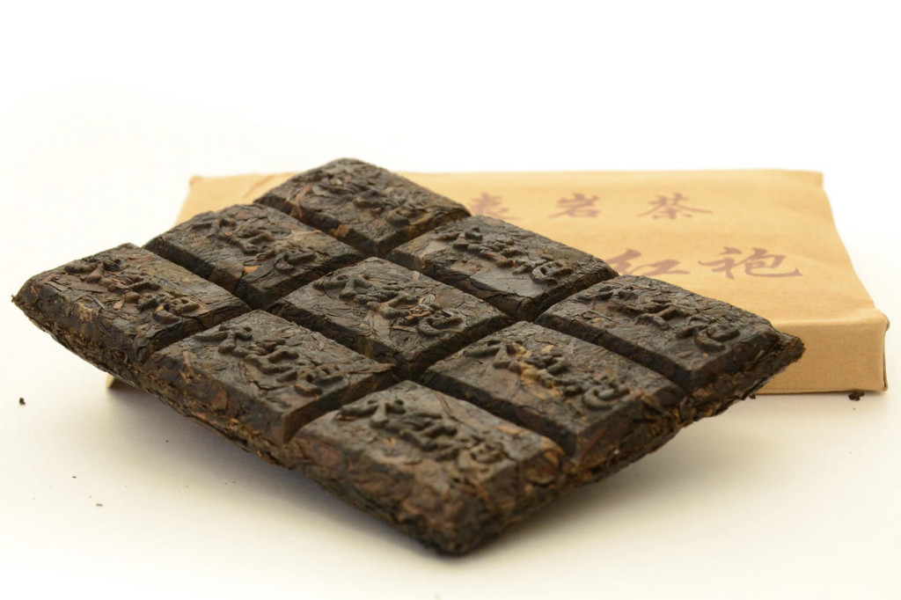 Чай улун (oolong, кит. 烏龍 — «Черный дракон») – разновидность чая, который в общей классификации занимает место между зеленым (绿茶, Люй Ча) и красным (红茶, Хун Ча) и является полу-ферментированным (т.е. имеет среднюю степень окисления). Чай данной группы можно разделить на два типа: темные (сильно-ферментированные) и светлые (слабо-ферментированные), которые производятся в различных регионах и имеют отличительные черты как в аромате и вкусе, так и во внешнем виде. К улунам сильной ферментации относятся: Гуандуские улуны («Чаочжоуские», Чаочжоу Ча — 潮州茶). Чай из одноименной провинции Гуандун. Чайные кусты типа Дань Цун (单丛, «одинокие кусты») произрастают на высоте от 400 до 1400 м. Отличительной особенностью чая является то, что сбор листьев производится отдельно с каждого куста, за счет чего аромат и вкус каждого являются уникальными. Наиболее известные сорта — Чаочжоу Ча, Фэн Хуан Дань Цун, Ми Лань Сян Дань Цун, Ба Сянь и др. Характерной чертой вкусовой палитры от других улунов можно назвать цветочно-медовые и ягодно-терпкие нотки. Уишаньские улуны (Северо-фуцзянские, Утесные). Чай с севера провинции Фуцзянь, произрастающий на горном массиве Уишань. Кусты растут в ущельях, на особом виде почвы. Самым лучшим считается чай, который вырос в узких ущельях на маленьких полосках земли, ширина которых не превышает нескольких метров. Называют его Чжэн Янь Ча (Настоящий утесный чай, 正岩茶). Наиболее известные сорта — Да Хун Пао, Уи Жоу Гуй, Ци Лань, Шуй Сянь и др. Вкусовые оттенки утесного чая включают в себя ноты выпечки и специй, ягодно-фруктовые тона, а также обертоны дерева и «огня». К улунам слабой ферментации относятся: Южно-фуцзянские улуны Чай из юга провинции Фуцзянь. Их колыбелью считается уезд Аньси, в котором произрастает более 50 видов чайных кустов. Но легендой является Те Гуань Инь – самый известный улун в мире. Его богатый и неповторимый вкус не перепутать ни с одним другим чаем. Достаточно попробовать его всего лишь раз, чтобы он навсегда завоевал любовь. Особенности вкусовой палитры играют в общей гамме весенних цветов, луговых трав и ягод, переливаясь оттенками фруктов и меда. Тайваньские улуны Чай с острова Тайвань. Здесь улуны обрабатываются как традиционными способами, так и в соответствии с технологией ГАБА (GABA). Наиболее известные сорта тайваньских улунов — Алишань, Дун Дин, Сы Цзы Чунь, ГАБА, Цзинь Сюань, Лао Ча Ван и др. О вкусах можно говорить бесконечно долго, но отличает эти чаи фруктово-цветочная гамма, с нотами цветов, специй, меда и весенних трав. Вне зависимости от региона произрастания и рецептуры приготовления этот чай объединяет, а также отличает от других разновидностей многогранный и завораживающий букет вкусов, яркий и сильный аромат цветов, фруктов и освежающее, глубокое послевкусие. Заваривать его можно от 7 до 15 раз за чаепитие. Это именно тот чай, который подойдет для проведения церемонии Гун Фу Ча – «Высшее мастерство заваривания чая». |
Красный чай |
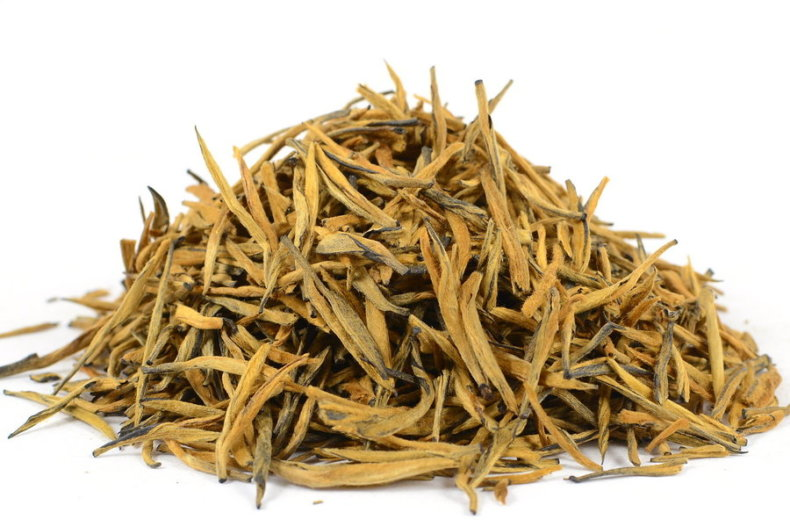 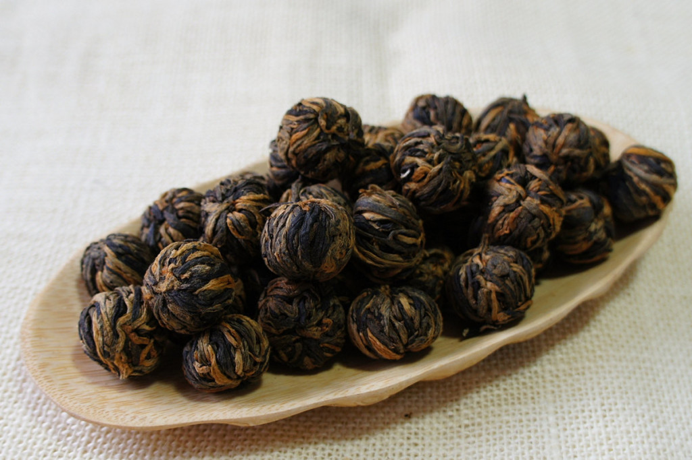 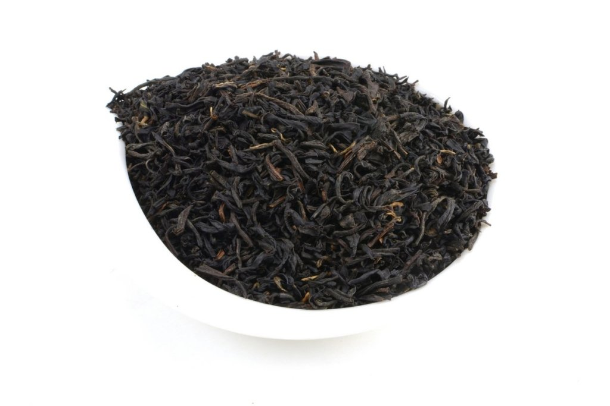 Красный чай (Хун Ча) — это чай сильной ферментации, степень окисления которого может достигать 70- 90%. Во всем мире его чаще всего называют черным. Но в Китае, непосредственно на своей родине, откуда тянутся многовековые корни и история возникновения, здесь он является традиционным красным чаем. И несмотря на большое количество отличий и тонкостей производства, нельзя ни с чем перепутать неповторимый вкус и аромат красного чая. В нем мягко переливаются оттенки мёда, выпечки, пряностей, шоколада, фруктов, специй, древесины и многими другими тонами. Невозможно передать всю эту гамму словами. Это чай, который хочется пробовать снова и снова, открывая новые букеты, раскрывающиеся в чайном листе. Красный чай имеет достаточно сложный и кропотливый процесс приготовления, состоящий из 4 этапов. Из за множества нюансов приготовления и разновидностей сырья его принято разделять на три основные группы: Сяо Чжуны, Гунфухуны и Хунсуйча. И каждая категория насчитывает несколько сотен сортов, которые по-своему уникальны в аромате и вкусе. |
Желтый чай |
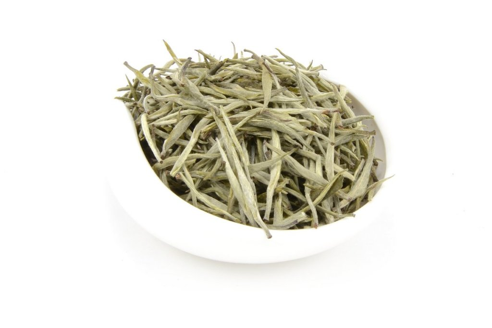 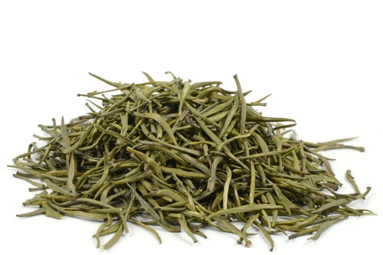 Жёлтый чай — самый редкий вид китайского чая. Слабоферментированый элитный чай, степень окисления листа которого составляет примерно 7—10 %. Жёлтый китайский чай изготавливается из сырья высочайшего качества, в провинциях Фуцзянь, Хунань, Сычуань, Чжецзян. Для изготовления одного килограмма этого чая необходимо примерно 50 000 почек, которые собираются в ручную, т.к. необходим тщательный отбор сырья. Собираются только не поврежденные и не раскрывшиеся, т.н. «жирные» почки, плотные и тяжёлые. Почки золотисто-желтого цвета покрыты серебряным пухом. Процесс изготовления желтого чая происходит в несколько этапов, и занимает около трех суток. Главным этапом производства является этап томления, который может происходить в пергаментных или тканевых мешках, либо кучах. Очень важно отслеживать температурный режим приготовления и скорость ферментации. Полезные свойства желтого чая За счет сырья и способа обработки желтый чай содержит в себе огромное количество микроэлементов, витаминов и аминокислот. Помогает при головных болях, снимает спазмы, активизирует защитные силы организма. Мягко тонизирует. Хорошо подойдет для творческих людей, людей занятых умственной деятельностью. |
Травы, добавки |
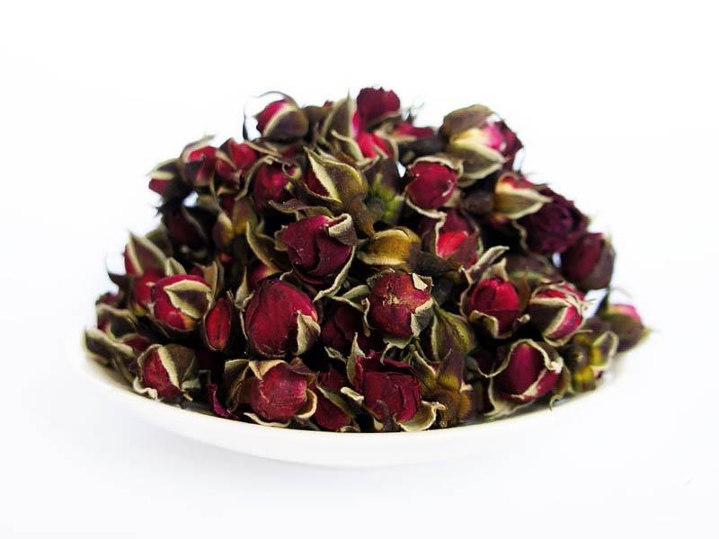
|
|
|
Чай | Статьи | Контакты | Форум |
|
 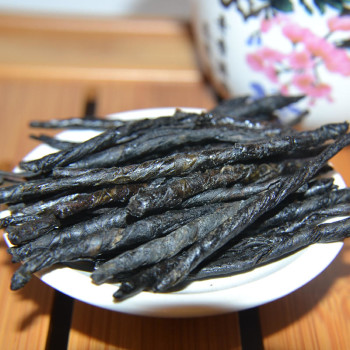
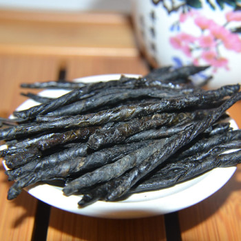